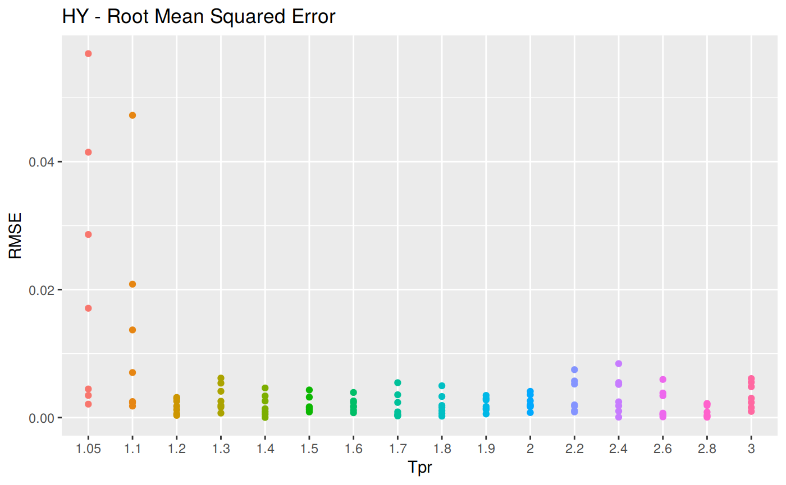
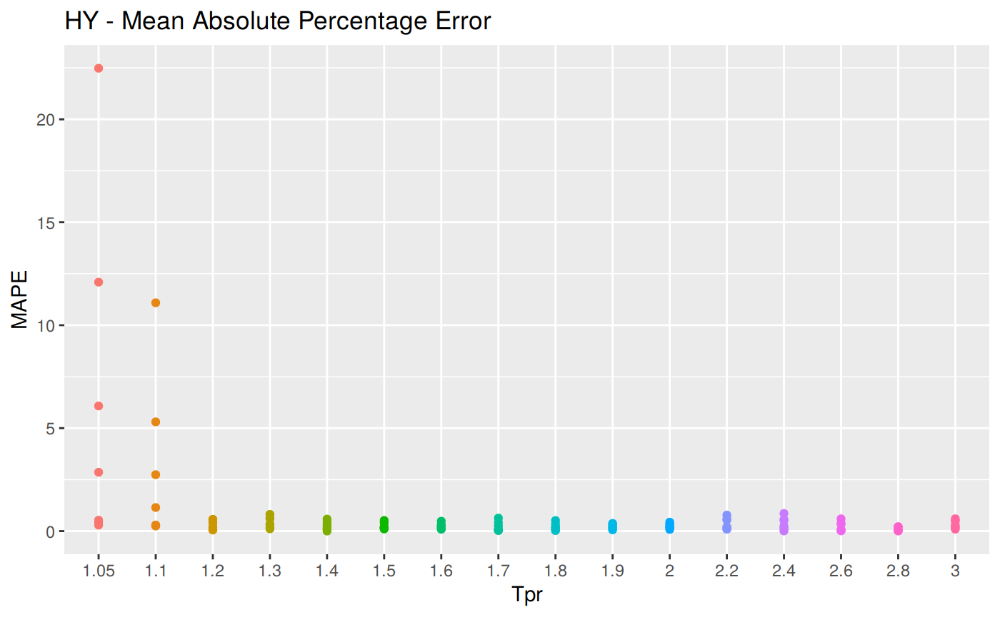
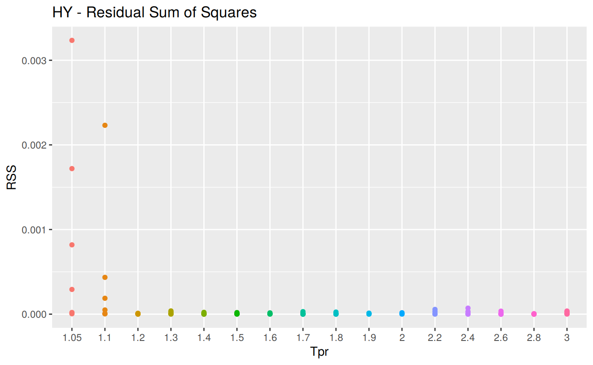
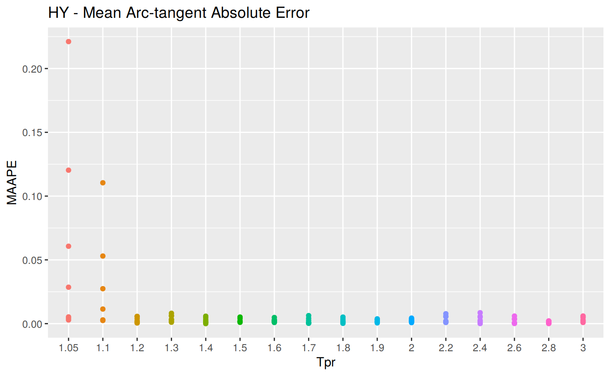
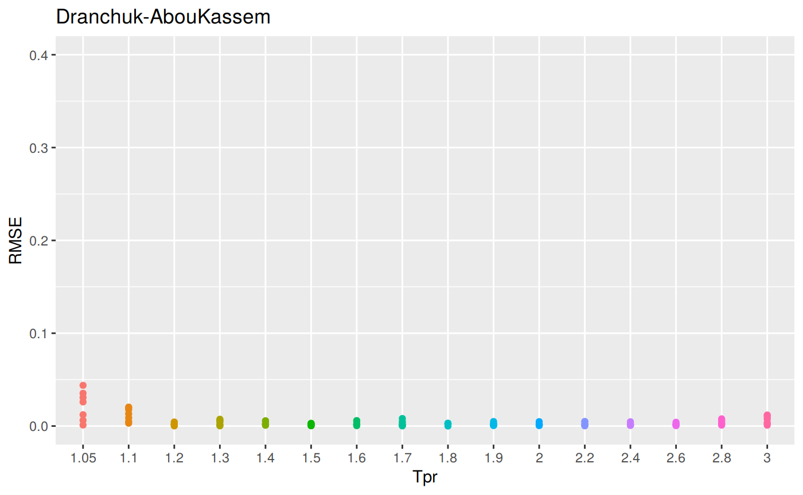
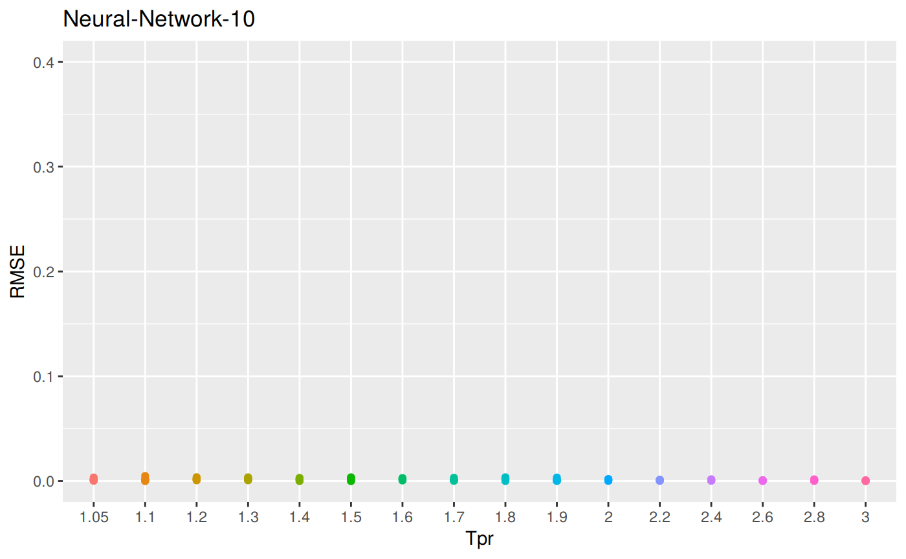
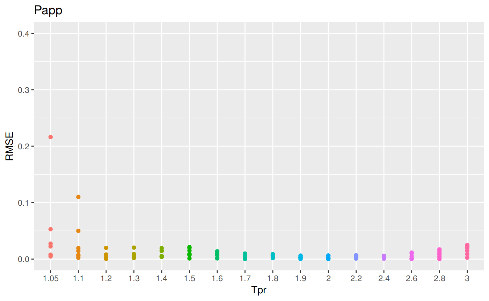

Measures of Error
To demonstrate graphically the difference between correlation and experimental data we will use the Hall-Yarborough correlation results.

Accuracy measurement
The comparative analysis shows tables with different error measurements:
RMSE: Root Mean Squared Error
MPE: Mean Percentage error
MAPE: Mean Absolute Percentage Error
MSE: Mean Squared Error
RSS: Residual sum of Squares
MAE: Mean Absolute Error
MAAPE: Mean Arc-tangent Absolute Errorwhere:
\(a_t\) are the observed true values. In our case the Standing-Katz chart \(z\) values;
\(f_t\) are the calculated or predicted values (the \(z\) values calculated by the correlations); and
\(n\) is the number of samples
RMSE, MSE and MAE are all scale-dependent measures since their scale depend on the scale of the data. MAE is very easy to calculate an understand but it affected by large outliers. MSE is also vulnerable to outliers and in different scale than the measured units. RMSE, the square root of MSE, would be preferrable but still is sensitive to large outliers.
A non-scale dependent measure is MAPE though it could be sensitive to values close or equal to zero since it contains a denominator. To fix the problem with small numbers, a new statistical function was proposed by Kim and Kim in 2016 that applies the Arc Tangent of the MAPE which prevents infinite when finds numbers closer to zero. The geometric explanation can be found if you picture a triangle where the tangent is \(| \frac {a_t - f_t} {a_t}|\), and \(\theta\) the angle for such triangle. We will see that as \({a_t}\) get smaller and closer to zero, MAPE would tend to infinite, while MAAPE with \(Arc Tan\) of the quotient would tend to \(\frac {\pi} {2}\).
RMSE: Root Mean Squared Error
Measure of accuracy, to compare errors of different calculation models for the same dataset.
\[RMSE = \sqrt {\sum_{t=1}^n \frac {(a_t - f_t)^2} {n}}\]
RMSE code
z_hy <- z.stats("HY")
sum_tpr <- as_tibble(z.stats("HY"))
hy <- ggplot(z_hy, aes(x = Tpr, y = RMSE, col = Tpr)) +
geom_point() + theme(legend.position="none") +
ggtitle("HY - Root Mean Squared Error")
hy

MPE: Mean Percentage error
\[MPE = \frac {100%} {n} \sum_{t=1}^n \frac {a_t - f_t} {a_t}\]
MPE code
# sum_tpr <- as_tibble(z.stats("HY"))
hy <- ggplot(z_hy, aes(x = Tpr, y = MPE, col = Tpr)) +
geom_point() + theme(legend.position="none") +
ggtitle("HY - Mean Percentage error")
hy

MAPE: Mean Absolute Percentage Error
\[MAPE = \frac {100} {n} \sum | \frac {a_t - f_t} {a_t}|\]
MAPE code
# sum_tpr <- as_tibble(z.stats("HY"))
hy <- ggplot(z_hy, aes(x = Tpr, y = MAPE, col = Tpr)) +
geom_point() + theme(legend.position="none") +
ggtitle("HY - Mean Absolute Percentage Error")
hy

MSE: Mean Squared Error
\[MSE = \frac {1}{n} \sum_{t=1}^n (a_t - f_t)^2 \] MSE code
sum_tpr <- as_tibble(z.stats("HY"))
hy <- ggplot(sum_tpr, aes(x = Tpr, y = MSE, col = Tpr)) +
geom_point() + theme(legend.position="none") +
ggtitle("HY - Mean Squared Error")
hy

RSS: Residual sum of Squares
\[RSS = \sum_{t=1}^n (a_t - f_t)^2 \] RSS code
# sum_tpr <- as_tibble(z.stats("HY"))
hy <- ggplot(z_hy, aes(x = Tpr, y = RSS, col = Tpr)) +
geom_point() + theme(legend.position="none") +
ggtitle("HY - Residual Sum of Squares")
hy
MAE: Mean Absolute Error
\[MAE = \frac {1} {n} \sum | {a_t - f_t} |\] MAE code
MAAPE: Mean Arc-tangent Absolute Error
\[MAAPE = \frac {1} {n} \sum ArcTan \, | \frac {a_t - f_t} {a_t}|\] MAAPE code
hy <- ggplot(z_hy, aes(x = Tpr, y = MAAPE, col = Tpr)) +
geom_point() + theme(legend.position="none") +
ggtitle("HY - Mean Arc-tangent Absolute Error")
hy

RMSE vs isotherm for all correlations
z_bb <- z.stats("BB")
bb <- ggplot(z_bb, aes(x = Tpr, y = RMSE, color = Tpr)) +
geom_point() + ylim(0, 0.4) + theme(legend.position="none") +
ggtitle("Beggs-Brill")
bb## Warning: Removed 6 rows containing missing values (geom_point).
sum_tpr <- as_tibble(z.stats("HY"))
hy <- ggplot(sum_tpr, aes(x = Tpr, y = RMSE, col = Tpr)) +
geom_point() + ylim(0, 0.4) + theme(legend.position="none") +
ggtitle("Hall-Yarborough")
hy
sum_tpr <- as_tibble(z.stats("DAK"))
dak <- ggplot(sum_tpr, aes(x = Tpr, y = RMSE, col = Tpr)) +
geom_point() + ylim(0, 0.4) + theme(legend.position="none") +
ggtitle("Dranchuk-AbouKassem")
dak
sum_tpr <- as_tibble(z.stats("SH"))
sh <- ggplot(sum_tpr, aes(x = Tpr, y = RMSE, col = Tpr)) +
geom_point() + ylim(0, 0.4) + theme(legend.position="none") +
ggtitle("Shell")
sh
sum_tpr <- as_tibble(z.stats("N10"))
n10 <- ggplot(sum_tpr, aes(x = Tpr, y = RMSE, col = Tpr)) +
geom_point() + ylim(0, 0.4) + theme(legend.position="none") +
ggtitle("Neural-Network-10")
n10
sum_tpr <- as_tibble(z.stats("PP"))
pp <- ggplot(sum_tpr, aes(x = Tpr, y = RMSE, col = Tpr)) +
geom_point() + ylim(0, 0.4) + theme(legend.position="none") +
ggtitle("Papp")
pp
## # A tibble: 112 x 11
## Tpr Ppr z.chart z.calc RMSE MPE MAPE MSE RSS
## <chr> <dbl> <dbl> <dbl> <dbl> <dbl> <dbl> <dbl> <dbl>
## 1 1.05 0.5 0.829 0.832 0.00347 -0.418 0.418 1.20e-5 1.20e-5
## 2 1.05 1.5 0.253 0.310 0.0569 -22.5 22.5 3.24e-3 3.24e-3
## 3 1.05 2.5 0.343 0.384 0.0415 -12.1 12.1 1.72e-3 1.72e-3
## 4 1.05 3.5 0.471 0.500 0.0286 -6.08 6.08 8.19e-4 8.19e-4
## 5 1.05 4.5 0.598 0.615 0.0171 -2.86 2.86 2.92e-4 2.92e-4
## 6 1.05 5.5 0.727 0.729 0.00210 -0.289 0.289 4.42e-6 4.42e-6
## 7 1.05 6.5 0.846 0.842 0.00447 0.528 0.528 2.00e-5 2.00e-5
## 8 1.1 0.5 0.854 0.857 0.00250 -0.293 0.293 6.27e-6 6.27e-6
## 9 1.1 1.5 0.426 0.473 0.0472 -11.1 11.1 2.23e-3 2.23e-3
## 10 1.1 2.5 0.393 0.414 0.0209 -5.31 5.31 4.35e-4 4.35e-4
## # … with 102 more rows, and 2 more variables: MAE <dbl>, MAAPE <dbl>